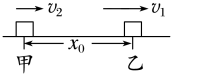
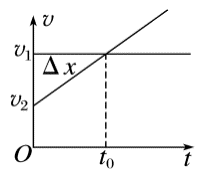
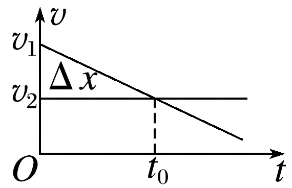
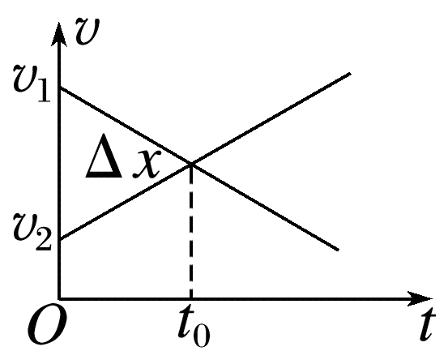
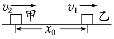
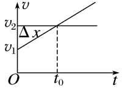
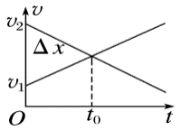
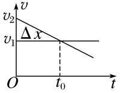

直线运动 & 曲线运动 · 公式 → 例题 → 闯关答题
运动学的综合应用。关键是抓住「速度相等」这一临界条件，再用位移关系列方程判断能否追上、相遇几次。
两物体在同一直线上一前一后运动，速度相同时它们之间可能出现距离最大、距离最小或者相遇（碰撞）的情况，这类问题称为追及相遇问题。
可先假设能够相遇，列出物体间的位移方程。如果位移方程是关于时间 $t$ 的二次方程：

常见情形：匀加速追匀速、匀速追匀减速、匀加速追匀减速



$t = t_0$ 以前（$v_2$ 小于 $v_1$）：两物体距离增大。
$t = t_0$ 时（$v_1 = v_2$）：两物体相距最远。
$t = t_0$ 以后（$v_2$ 大于 $v_1$）：两物体距离减小。
追及情况：只能追上一次。

常见情形：匀减速追匀速、匀速追匀加速、匀减速追匀加速



$t_0$ 时刻以前（$v_2$ 大于 $v_1$）：两物体距离减小（甲未追上乙时）。
$t_0$ 时刻（$v_2 = v_1$）：$\Delta x = x_{甲} - x_{乙}$
如：如果车辆有最大速度的限制，要注意车辆达到最大速度前后运动状态的不同。先按匀变速（或匀加速）处理，达到最大速度后再按匀速处理，分段列式。